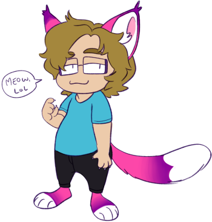

1991 Cancer
1991 Cancer Gray ace
Sapphic Genderqueer she/theyDigital artist
Furry Homebody
 Hello! My name is Merle, I am a queer hobby artist. I live with my lovely partner and our cat. I draft plans for utilities construction for a living, and I mostly draw and goof around on the internet in my free time.
I first started learning HTML as a kid through neopets, and got into CSS to customize my deviantart journals when I was a teen. I always wanted to build my own site, but only really got into it with a friend in 2022. I take breaks from time to time but I love working on this little project and am always cooking up new ideas for it.
For art I primarily use Clip Studio Paint on a 4th gen iPad Pro 12.9" with an Apple Pencil, though lately I've been trying out traditional media as well.
If you would like to contact me directly, my email address is .
Please do not send me anything relating to business interests or making money. Any spam, promotional, business related, or inappropriate messages will be ignored and deleted.